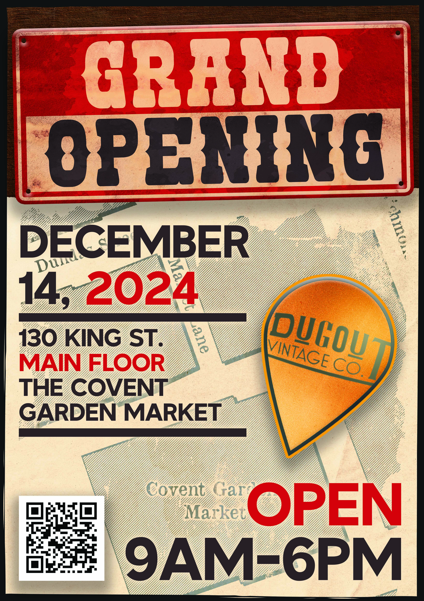
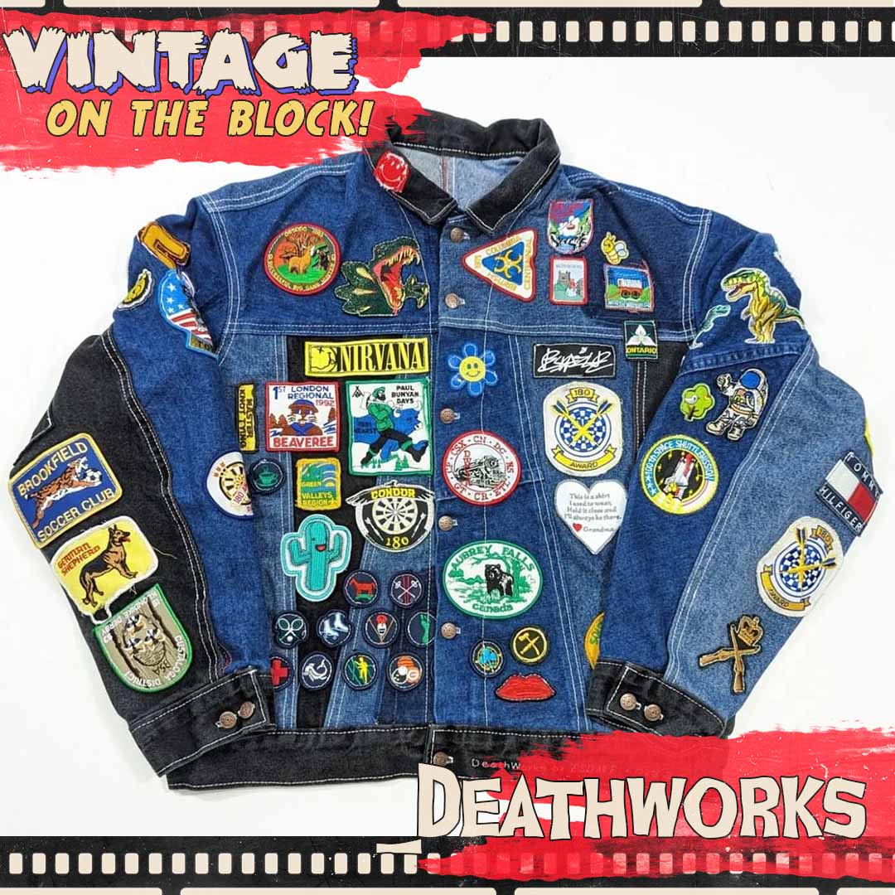
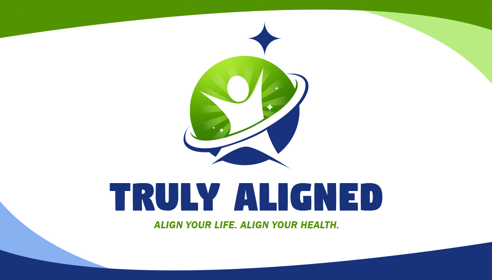

Welcome to my Portfolio!
A Short Intoduction & My Instagram Page
Hi, there! My name is Donovan Morgan. Welcome to my portfolio! In the grand scheme of things, I suppose I'm relatively new in the world of graphic design.
However, I've spent a good portion of my life doing freelance work here and there. Most of my experience with that comes in the form of making posters and
designing Instagram posts. It's what I'm most drawn to in the craft. Take a look for yourself, and enjoy your stay! If you'd like to
view my artwork, I encourage you to visit my Instagram page right here!. On there, I post a number of my personal projects and artwork!
My Works!
Posters
A few examples of some posters I've done in the past. I have experience creating posters for Instagram and other social media sites, as well as for print.
All of these posters were done for DugoutVintage - a local vintage clothing store. Fun fact, they're my most consistent client!

Instagram Posts
And here are some examples of posts that I designed specifically for viewing on Instagram. As you can see, all of them are formatted to fit the app's usually square post size.
Like the posters, all of them were done for DugoutVintage.

Koiinailss
Now, I've done more than just posters. Below are a few examples of things I've done for Koiinailss - a cool, local nail business! I've
included a few logos I've done for them, as well as two pieces that they posted on Instagram. The style they chose is rather unique, and I believe that I managed to
capture their vision well enough. Drawing is another one of my passions, and I'm thankful that they allowed me to stretch those muscles with the two pieces of promotional
Instagram pieces.
Other Works
Below, I've included a number of things I've done in the past for school, as well as a few projects I've done for clients. With the inclusion of these works, I aim to round out my portfolio by displaying my wide range of
design expertise.

Final Thoughts
I hope you liked my stuff!
All of the pieces above were all made by yours truly - in combination with the brilliant people I've had the pleasure of working with. Truth
be told, I have a lot more stuff I've done. In the interest of keeping things concise, though, I chose to highlight the works that I'm most proud of. They're also some
of my more recent projects, which I think encapsulate where my skills as a designer are at the moment. This website was made by me, too - I have little coding experience
aside from what I learnt in school, but I've been slowly growing my skillset with it as well as anything else I could stand to learn about the industry!